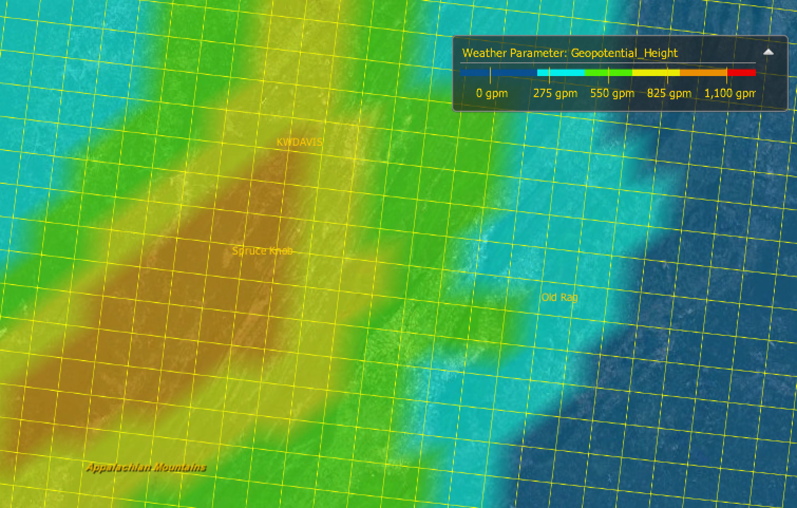
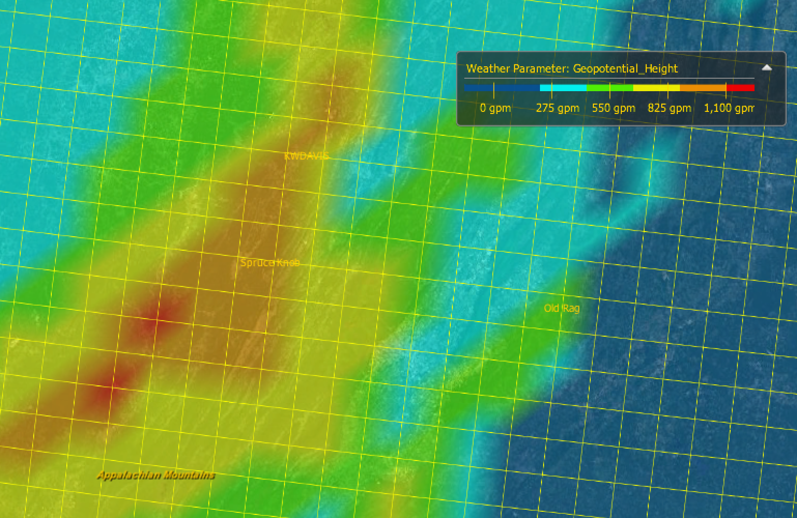
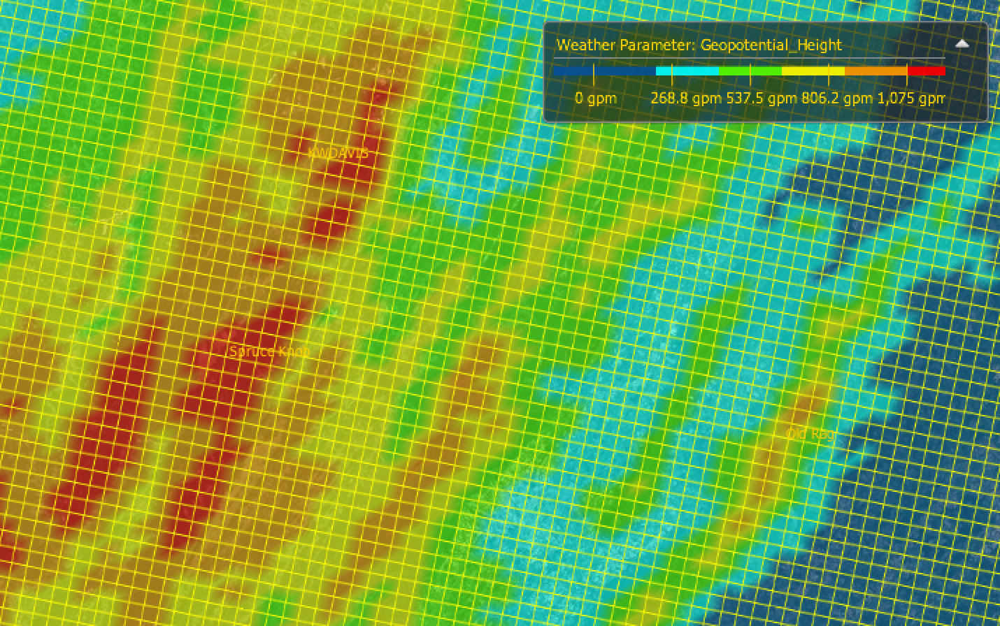

NOAA Data
NOAA runs three regular forecasts, and has a fourth experimental model
- Global Forecast System (GFS)
- 1 degree grid
- North American Mesoscale (NAM)
- 12km grid
- 6 hour updates
- forecasts out 84 hours
- ~ 116 MB each
- Rapid Update Cycle / Rapid Refresh (RUC / RAP)
- 13km or 20km grid
- hourly updates
- forecasts out 12 hours
- ~ 12 MB each (6 MB for 20km grid)
- High-Resolution Rapid Refresh (HRRR)
- 3km nest inside RAP
- ~ 325 MB (http://hrrr.agron.iastate.edu/data/hrrr_surface/)
There is a good comparison between NAM and RAP at (http://www.drjack.info/blip/INFO/namvsruc.html).
However, since the Dr. Jack article was written, it appears that RAP has been updated with a 13km grid option. This appears to better capture the terrain of the Alleghanies.
NAM (12km grid)

RAP (13km grid)

Because RAP is so much smaller than NAM, that's probably what I'll use. Though HRRR looks appealing (http://hrrr.agron.iastate.edu/).
HRRR (3km grid)

HRRR's 3km grid resolution is enough to resolve the Shenandoah ridgeline. The challenge is dealing with the large GRIB files. It looks like there are a few collections of GRIB records for HRRR.
'Surface' files
Can be downloaded from (http://hrrr.agron.iastate.edu/data/hrrr_surface/). They are around 300 MB, and contain data at 15 minute instances about 12 hours out. They only contain dewpoint, temperature, and wind U/V.
'2d' files
Can be downloaded from (http://hrrr.agron.iastate.edu/data/hrrr/). These have only one time instance, but contain all 2d fields. They are around 80 MB.